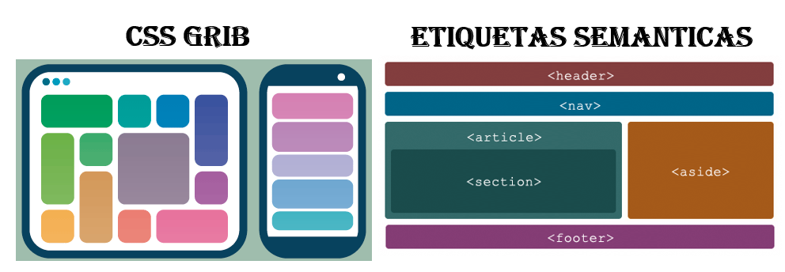

|
introducción:
La página que a continuación encontraremos estará el desarrollo de la guía de actividades de la fase 3, donde nos enfocamos a crear un layout,
posterior a esto comenzaremos a crear 7 páginas solicitadas en la actividad pero que en cada una nos enfocaremos a explicar el tema escogido
en la actividad anterior que fue etiquetas semánticas y CSS grib, mostrando lo más básicos para podernos introducir en este tema y llegar a
desarrollar unos sitios web prácticos y fáciles para el usuario.
|

|